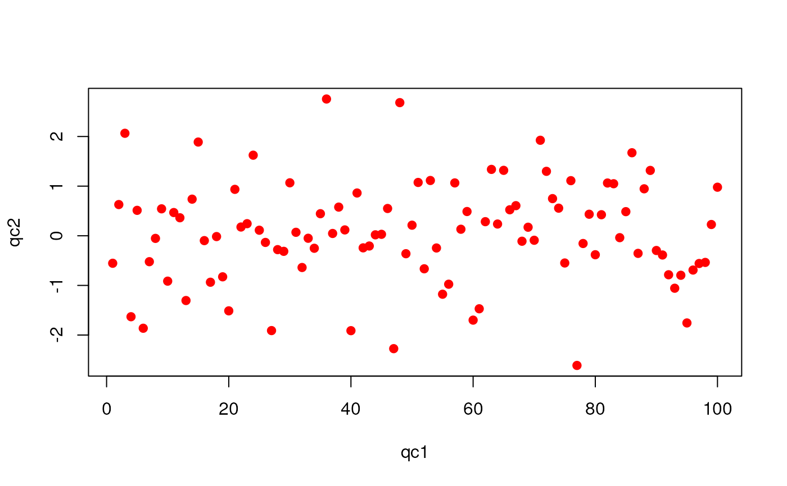

"QcMetric" class for QC itemsQcMetric-class.RdData structure for individual QC metrics items.
Objects can be created using the constructor QcMetric(...), where
slots are assigned individually. See example below.
name:Object of class "character" of length 1
naming the object.
description:Object of class "character" of
arbitrary length describing the qc metric in more details.
qcdata:Object of class "environment" that
stores the actual data.
plot:Object of class "function" to graphically
represent the data and infer quality status.
show:Object of class "function" to print a
short textual representation of the object. A reasonable
default value is provided.
status:Object of class "logical" that
indicates weather the data passes (TRUE) or fails
(FALSE) the metric or has not yet been evaluated.
signature(object = "QcMetric"): retrieves the
name of the object.
signature(object = "QcMetric", value =
"character"): set the name of the object.
signature(object = "QcMetric"): retrieves the
description of the object.
signature(object = "QcMetric", value =
"character"): set the description of the object.
signature(object = "QcMetric"): retrieves the
status of the object.
signature(object = "QcMetric", value =
"logical"): sets the status of the objects.
signature(object = "QcMetric", x = "missing"):
lists all the data objects that are associated with the
objects.
signature(object = "QcMetric", x =
"character"): retrieves the variable x for the
object.
signature(object = "QcMetric", var): creates
or overwrites (with a message) the data variable var by
assigning the RHS value. If var is missing and the RHS
expression is an environment, then qcdata is reset with all
the variables in value.
signature(object = "QcMetric"): return the
environment that stores the QC data.
signature(object = "QcMetric"):
Set all variable in the RHS environment as qcdata
variables. Equivalent to qcdata(object) <- x where x
is an environment.
signature(object = "QcMetric"): shows a textual
summary of object. The default show implementation
is available as the qcshow{object, qcdata} function. The
second argument is a logical (default is TRUE) that
specifies whether qcdata(object) should be displayed.
signature(object = "QcMetric", value =
"function"): sets a custom show method for
object.
signature(x = "QcMetric", y = "missing"): plots
the object using the provide show method.
signature(object = "QcMetric", value =
"function"): sets a custom plot method for
object.
signature(x = "QcMetric", ...): to generate
quality reports. See qcReport for details.
Laurent Gatto
The QcMetrics class to bundle a set of
QcMetric instances.
(qc <- QcMetric())#> Object of class "QcMetric" #> Name: A QcMetric prototype #> Status: NA #> Data: emptyqcdata(qc)#> character(0)#> Error in qcdata(qc, "x") : No qcdata 'x' in object.#> [1] "qc1" "qc2"#> [1] TRUE#> [1] TRUEname(qc) <- "My test QcMetric" description(qc) <- "This qc metric describes bla bla bla, indicating possible issues in the third step of protocol bla bla bla." status(qc) <- FALSE qc#> Object of class "QcMetric" #> Name: My test QcMetric #> Description: #> This qc metric describes bla bla bla, indicating possible issues in the #> third step of protocol bla bla bla. #> Status: FALSE #> Data: qc1 qc2#> [1] 100#> [1] 1 2 3 4 5 6show(qc)#> Object of class "QcMetric" #> Name: My test QcMetric #> Description: #> This qc metric describes bla bla bla, indicating possible issues in the #> third step of protocol bla bla bla. #> Status: FALSE #> Data: qc1 qc2#> Updated show methodshow(qc) <- qcshow qc#> Object of class "QcMetric" #> Name: My test QcMetric #> Description: #> This qc metric describes bla bla bla, indicating possible issues in the #> third step of protocol bla bla bla. #> Status: FALSE #> Data: qc1 qc2#> Warning: No specific plot function definedplot(qc) <- function(object, ...) plot(qcdata(object, "qc2"), qcdata(object, "qc1"), xlab = "qc1", ylab = "qc2", ...) plot(qc)